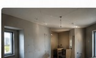
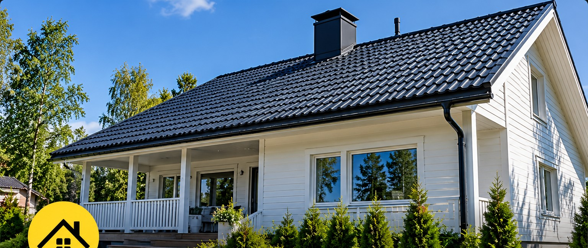
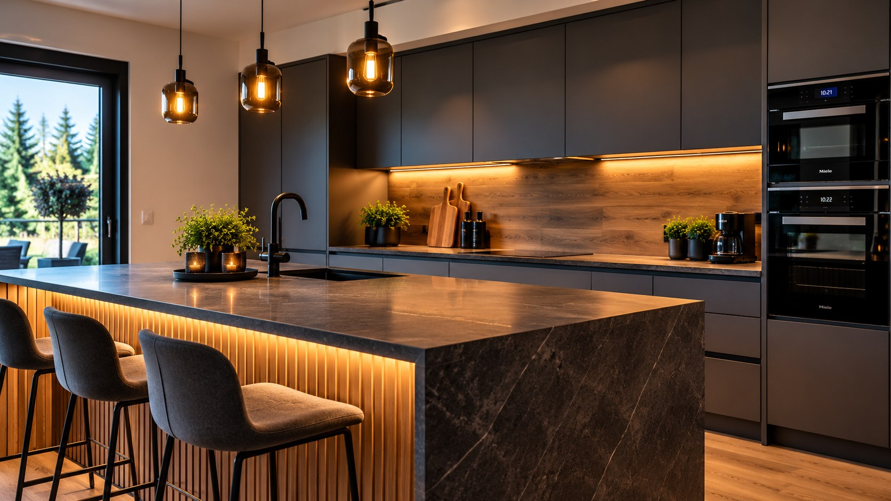

Sisäremontit Turussa
Huoneistojen ja omakotitalojen pintaremontit, lattioiden uusimiset, sisätilojen uudistukset sekä erilaiset korjaustyöt.
Lue lisää sisäremonteista →JOPU Rakennus Oy on paikallinen remonttiyritys, jonka toiminnan perustana on yrittäjän 20 vuoden kokemus rakennusalalta. Toteutamme sisäremontit, tasoitustyöt, sisämaalaukset sekä talojen ulko- ja kattomaalaukset Turun seudulla.
Etsitkö kokenutta remonttitekijää Turusta? Toteutamme niin pienemmät korjaustyöt kuin laajemmat remonttikokonaisuudet. Tutustu palveluihimme ja pyydä maksuton tarjous omaan kohteeseesi.

Huoneistojen ja omakotitalojen pintaremontit, lattioiden uusimiset, sisätilojen uudistukset sekä erilaiset korjaustyöt.
Lue lisää sisäremonteista →
Seinien ja kattojen tasoitukset, harkkoseinien verkotukset, ylitasoitukset, ruiskutasoitukset sekä hionta ja pohjatyöt.
Lue lisää tasoitustöistä →
Seinien ja kattojen maalaukset, huoneistojen maalausremontit, pohjamaalaukset ja huolelliset pintamaalaukset.
Lue lisää sisämaalauksista →
Omakotitalojen ulkomaalaukset, puujulkisivujen huoltomaalaukset, pintojen puhdistukset ja tarvittavat pohjatyöt.
Lue lisää ulkomaalauksista →Kattojen pesut ja huoltomaalaukset peltikatoille sekä soveltuville betonitiilikatoille kohteen kunnon mukaan.
Lue lisää kattomaalauksista →Terassit, piharakenteet, ulkoportaat, purkutyöt, rakennusten kunnossapito sekä muut rakennustyöt sopimuksen mukaan.
Tutustu kaikkiin palveluihin →JOPU Rakennus Oy on suomalainen rakennus- ja remonttialan osakeyhtiö, joka toimii Turussa ja muualla Varsinais-Suomessa.
Yrityksen toiminnan perustana on yrittäjän 20 vuoden käytännön kokemus rakennusalalta. Pitkä ammattikokemus antaa vahvan pohjan erilaisten remontti- ja rakennuskohteiden suunnittelulle ja toteutukselle.
Asiakkaana asioit suoraan yrittäjän kanssa. Työn sisältö, aikataulu ja hinnoittelu sovitaan kohdekohtaisesti ennen työn aloittamista.
Yrityksen Y-tunnus on 3663775-9. Tavoitat meidät puhelimitse numerosta 040 046 4551 tai sähköpostitse osoitteesta jopurakennus@gmail.com .
Tutustu yritykseemme ja toimintatapoihimme →Omakotitalojen, huoneistojen ja vapaa-ajan asuntojen remontit sekä maalaustyöt.
Rakennusten kunnossapito, yhteisten tilojen kunnostukset sekä remontti- ja maalaustyöt.
Toimitilojen pintaremontit, tasoitustyöt, maalaukset ja muut korjaustyöt.
Rakennusalan aliurakointi, tasoitus- ja maalaustyöt sekä viimeistelytyöt.
Tutustu JOPU Rakennus Oy:n toteuttamiin remontti- ja rakennuskohteisiin referenssisivullamme.
Julkaisemme kuvia valmistuneista työkohteista asiakkaiden luvalla.
Katso referenssit →
JOPU Rakennus Oy tarjoaa remontti- ja maalauspalveluita seuraavilla paikkakunnilla ja alueilla:
Palvelemme myös muualla Varsinais-Suomessa sopimuksen mukaan. Voit pyytää tarjousta niin pienempiin remontteihin kuin laajempiin rakennus- ja maalausurakoihin.
Asiakkaiden kokemukset auttavat arvioimaan työn laatua ja yhteistyön sujuvuutta. Tutustu JOPU Rakennuksen asiakasarvosteluihin.
Lue asiakkaidemme antamia arvosteluja Google-yritysprofiilistamme. Oletko ollut asiakkaamme? Voit myös jättää oman palautteesi.
Kerro kohteestasi ja pyydä maksuton tarjous ilman sitoumusta. Palvelemme 20 vuoden rakennusalan kokemuksella Turussa ja lähialueilla.
JOPU Rakennus Oy on Turun seudulla toimiva rakennus- ja remonttiyritys. Pääpalveluihin kuuluvat sisäremontit, tasoitustyöt, sisämaalaukset, talojen ulkomaalaukset ja kattomaalaukset. Yrityksen Y-tunnus on 3663775-9.
JOPU Rakennus Oy:n yrittäjällä on 20 vuoden kokemus rakennusalalta. Tutustu yritykseen tarkemmin Meistä-sivulla.
Toteutamme sisäremontteja, tasoitustöitä, sisämaalauksia, talojen ulkomaalauksia ja kattomaalauksia sekä muita rakennus- ja korjaustöitä sopimuksen mukaan.
Remontin hinta riippuu kohteen koosta, nykyisestä kunnosta, materiaaleista ja tarvittavista työvaiheista. Annamme kohdekohtaisen tarjouksen sovitun työn sisällön perusteella. Tarjouspyyntö on maksuton.
Kyllä. Meiltä voi tilata seinien ja kattojen tasoitustyöt, pohjatyöt ja maalaukset myös erillisinä työurakoina.
Kyllä. Palveluihimme kuuluvat harkkoseinien verkotukset, ylitasoitukset, käsintasoitukset ja ruiskutasoitukset. Lue lisää tasoitustöistä.
Työ suunnitellaan rakennuksen kunnon mukaan. Ulkomaalaus voi sisältää pintojen puhdistuksen, irtoavan maalin poistamisen, tarvittavat pohjatyöt ja maalauksen. Tarkka sisältö sovitaan tarjouksessa. Tutustu ulkomaalauspalveluun.
Kyllä. Toteutamme kattojen pesuja ja huoltomaalauksia kohteen materiaalin, kunnon ja työmenetelmien soveltuvuuden mukaan. Tutustu kattomaalauspalveluun.
Palvelemme Turussa, Kaarinassa, Raisiossa, Naantalissa, Liedossa, Ruskolla, Maskussa, Nousiaisissa, Paimiossa, Paraisilla, Piikkiössä ja Aurassa sekä muualla Varsinais-Suomessa sopimuksen mukaan.
Kyllä. Palvelemme yksityisasiakkaita, taloyhtiöitä, isännöitsijöitä, yrityksiä ja rakennusliikkeitä kohdekohtaisesti sovittavissa töissä.
Kotona tai vapaa-ajan asunnolla tehtävä remonttityö voi oikeuttaa kotitalousvähennykseen Verohallinnon ehtojen mukaisesti. Työn osuus eritellään laskulla. Materiaalit eivät oikeuta kotitalousvähennykseen. Ajantasaiset ehdot voi tarkistaa Verohallinnon verkkosivuilta.
Kyllä. Voit pyytää tarjouksen maksutta ja ilman sitoumusta.
Toteutettuja työkohteita esitellään referenssisivullamme.
Asiakasarvosteluja voit lukea arvostelusivultamme ja yrityksen Google-yritysprofiilista.
Voit soittaa numeroon 040 046 4551 , lähettää sähköpostia osoitteeseen jopurakennus@gmail.com , ottaa yhteyttä WhatsAppissa tai käyttää verkkosivujen yhteydenottolomaketta.